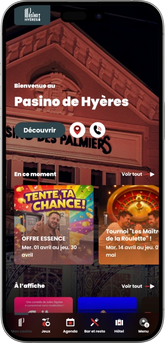
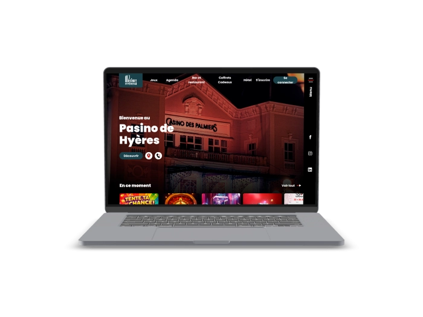

Offre de bienvenue exclusive de
Offre de bienvenue exclusive de
Le Casino Partouche Incontournable à Hyères
Top casinos
Détails du bonus
Casino
Bonus
Note
Tours gratuits
Plus d'infos
Obtenir
Avantages
- Vous cherchez un casino de confiance dans le Var ? Notre établissement agréé par l'ANJ réunit plus de 150 machines à sous, tables de jeux traditionnels et une Poker Room animée, le tout dans un monument classé en plein cœur d'Hyères.
-
150+ machines à sous de 0,02 € à 20 € — jackpots progressifs inclus
-
6 tables traditionnelles : roulette anglaise, blackjack, Ultimate Poker
-
Poker Room avec 2 tables Texas Hold'em et tournois mensuels Partouche
-
Monument classé Bâtiment de France, 1 Av. Ambroise Thomas, Hyères 83400
-
Hôtel ★★★★, restaurant Le Vic for Victoria & salle de spectacle sur place
-
Ouvert 7j/7 de 9h à 4h — parking gratuit & Wi-Fi offerts à nos clients
- Rejoignez chaque soir des milliers de joueurs varois dans notre établissement agréé par l'Autorité Nationale des Jeux. Notre équipe bilingue français-anglais est à votre disposition tous les jours.
Pasino Hyères App



À propos du Pasino de Hyères
Situé en plein cœur d'Hyères, notre Pasino Partouche est un monument classé Bâtiment de France. Nous accueillons les amateurs de jeux du Var et de toute la Côte d'Azur dans un cadre d'exception, 7j/7.
- Intégration au réseau Partouche, leader français des casinos
- Extension à 150+ machines à sous et 55 postes électroniques
- Ouverture de la Poker Room avec tournois satellites Partouche
- Inauguration du restaurant Le Vic for Victoria, cuisine méditerranéenne
Nous opérons sous agrément de l'Autorité Nationale des Jeux (ANJ), garant de la régularité de nos jeux. Toutes nos machines à sous sont certifiées pour garantir une redistribution équitable et des parties justes à nos joueurs.

Nous enrichissons continuellement notre offre pour les joueurs du Var et de Provence. Notre engagement pour le jeu responsable reste au cœur de notre démarche. Venez nous rendre visite à Hyères et découvrez l'expérience Partouche !
Jeux & Machines à Sous à Hyères
Notre Offre Complète de Jeux au Pasino de Hyères
Bienvenue dans l'univers du jeu au Pasino de Hyères, l'établissement phare du groupe Partouche dans le département du Var. Notre salle de jeux, installée dans un élégant monument classé Bâtiment de France en plein centre-ville d'Hyères, réunit plus de 150 machines à sous certifiées, 55 postes de jeux électroniques et 6 tables de jeux traditionnels agréées par l'Autorité Nationale des Jeux. Que vous soyez un joueur occasionnel ou un passionné de gaming, notre établissement propose une expérience de divertissement complète et sécurisée sur la Côte d'Azur.
Les Machines à Sous : Plus de 150 Titres pour Tous les Budgets
Vous aimez les sensations fortes sur les machines à sous ? Notre salle réunit plus de 150 machines, avec des mises allant de 0,02 € à 20 € par partie, adaptées aussi bien aux joueurs prudents qu'aux amateurs de grosses mises dans le Var. Nos machines à sous incluent des vidéos rouleaux aux thèmes variés, des vidéos poker et des jackpots progressifs. Ces derniers, alimentés en temps réel, permettent de remporter des gains parfois très importants avec une seule mise. Notre Megapot constitue l'un des jackpots les plus attractifs de notre réseau Partouche en région Provence-Alpes-Côte d'Azur. Toutes nos machines sont régulièrement auditées et certifiées pour garantir un taux de redistribution équitable, conformément aux exigences de l'ANJ.
- Vidéos rouleaux : Des centaines de thèmes disponibles — aventure, mythologie, nature, cinéma — avec des fonctionnalités bonus comme les free spins, les wilds empilés et les symboles scatter, pour un divertissement en salle sans égal à Hyères.
- Vidéos poker : Jouez au Jacks or Better, Double Bonus ou Deuces Wild sur nos postes dédiés. Les règles sont affichées sur chaque terminal pour vous permettre d'optimiser votre stratégie de jeu dès votre première visite.
- Jackpots progressifs : Nos machines à jackpots progressifs sont reliées au réseau Partouche, ce qui signifie que la cagnotte augmente à chaque partie jouée dans nos casinos partenaires à travers toute la France. Le Megapot peut atteindre des sommes exceptionnelles.
- Mises adaptées : Avec des paris à partir de 0,02 €, nos machines sont accessibles à tous les budgets. Les joueurs expérimentés apprécieront les postes à mise maximale de 20 €, idéaux pour maximiser les gains potentiels lors de chaque session.
Les Postes Électroniques : 55 Terminaux Modernes
Envie de découvrir les jeux de table sans rejoindre une table physique ? Nos 55 postes de jeux électroniques offrent la meilleure solution pour s'initier aux classiques du casino à Hyères. On y retrouve 48 roulettes électroniques et 7 postes de Black Jack électronique, tous équipés d'interfaces intuitives et de règles affichées en français. Cette section est particulièrement appréciée des nouveaux joueurs varois qui souhaitent se familiariser avec les jeux traditionnels avant de rejoindre les tables humaines. Les terminaux électroniques sont disponibles dès l'ouverture à 9h, bien avant l'ouverture des tables traditionnelles, ce qui vous permet de profiter d'une session de jeu à votre rythme tout au long de la journée.
- Roulette électronique (48 postes) : Nos terminaux de roulette anglaise électronique permettent de miser à partir de 1 € par numéro. Chaque poste dispose d'un historique des 20 derniers tirages et d'un écran statistique pour vous aider à affiner vos choix de mise.
- Black Jack électronique (7 postes) : Nos postes de Black Jack électronique respectent les règles officielles avec possibilité de doubler, splitter et assurer. La mise minimale démarre à 1 €, idéale pour les débutants souhaitant s'exercer sans pression à Hyères.
Les Tables de Jeux Traditionnels : 6 Tables Agréées ANJ
Pour les joueurs en quête d'une expérience authentique avec un croupier humain, nos 6 tables de jeux traditionnels sont ouvertes chaque soir à partir de 20h30. Supervisées par des croupiers professionnels formés aux standards du groupe Partouche, elles accueillent jusqu'à plusieurs dizaines de joueurs simultanément dans une atmosphère à la fois sophistiquée et conviviale, typique du sud de la France. Chaque table est agréée par l'Autorité Nationale des Jeux et fait l'objet de contrôles réguliers pour garantir la transparence et la régularité des parties.
| Jeu | Mise min | Infos |
|---|---|---|
| Roulette Anglaise | 2 € | 1 table, croupier en direct |
| Black Jack | 5 € | 2 tables, double & split autorisés |
| Ultimate Poker | 5 € | 1 table, poker contre la banque |
| Texas Hold'em | Cave 100 € | 2 tables, Poker Room dédiée |
La Poker Room : Tournois et Cash Games à Hyères
Notre Poker Room est l'une des plus animées du Var, avec 2 tables de Texas Hold'em accueillant des parties de cash game et des tournois réguliers. La cave minimum est fixée à 100 € pour les tables standard et 250 € pour les tables VIP, offrant un jeu dynamique et stratégique. Nous organisons chaque mois des tournois événementiels ainsi que des satellites du prestigieux Partouche Poker Tour, donnant la chance à nos joueurs hyérois de se qualifier pour des compétitions nationales. Les mardis et jeudis à partir de 20h30, des tournois satellites sont proposés avec un droit d'entrée de 125 €, ouverts aux joueurs inscrits au programme Partouche Mon Casino.
- Cash Game Texas Hold'em : Parties disponibles chaque soir dès 20h30 avec des niveaux de blind adaptés à tous les profils, du joueur amateur au régulier confirmé de la région Var.
- Tournois Satellites PPT : Chaque mardi et jeudi à 20h30, participez à nos satellites Partouche Poker Tour pour 125 € d'inscription. Les qualifiés représentent Hyères sur les tables nationales du réseau Partouche.
- Initiations au poker : Vous débutez ? Nos croupiers professionnels proposent des séances d'initiation au Texas Hold'em sur demande, parfaites pour les visiteurs découvrant la Côte d'Azur et souhaitant apprendre les bases du jeu dans une ambiance détendue.
- Tournois événementiels : Plusieurs fois par an, nous organisons des tournois spéciaux avec des prize pools renforcés, des animations et des lots exclusifs réservés aux membres de notre programme de fidélité Partouche Mon Casino.
Nos Horaires et Accès au Casino d'Hyères
Notre Pasino est ouvert 7 jours sur 7, de 9h à 4h du matin, pour s'adapter aux emplois du temps de tous nos visiteurs, qu'ils viennent de Hyères, de Toulon à 19 km, de Bandol à 36 km ou même de Saint-Tropez à 60 km. Les machines à sous et les postes électroniques sont accessibles dès l'ouverture, tandis que les tables de jeux traditionnels accueillent les joueurs à partir de 20h30. La présentation d'une pièce d'identité valide est obligatoire à l'entrée, conformément à la réglementation française sur les établissements de jeux. Notre parking privatif est offert gratuitement à toute notre clientèle, et nous disposons d'un accès Wi-Fi haut débit dans l'ensemble de l'établissement.
Fournisseurs de logiciels
Restaurant, Hôtel & Services à Hyères
Au-delà du Jeu : L'Expérience Complète du Pasino de Hyères
Le Pasino de Hyères, fleuron du groupe Partouche sur la Côte d'Azur, n'est pas uniquement un casino : c'est un véritable pôle de divertissement installé dans un monument classé Bâtiment de France en plein cœur de la ville d'Hyères. Entre notre restaurant gastronomique, notre hôtel quatre étoiles, notre salle de spectacle et notre programme de fidélité exclusif, nous vous proposons une expérience de loisirs complète pensée pour les résidents du Var comme pour les touristes de passage sur la Côte d'Azur. Chaque visite au Pasino devient ainsi une soirée mémorable, bien au-delà des tables de jeux.
Le Restaurant Le Vic for Victoria : Cuisine Méditerranéenne au Cœur d'Hyères
Après une session de jeu stimulante, rien de tel qu'une pause gastronomique dans notre restaurant Le Vic for Victoria, ouvert du mercredi au dimanche de 12h à 14h30 et de 19h30 à 22h30 (jusqu'à 23h le samedi). Notre cuisine se veut passionnément méditerranéenne, sublimant les produits frais du marché de Provence et les saveurs de la mer du littoral varois. Le chef orchestre une carte créative qui évolue avec les saisons, privilégiant les producteurs locaux du Var et les poissons de la Méditerranée. Notre salle à manger élégante et notre terrasse offrent une atmosphère raffinée, idéale pour un dîner en tête-à-tête ou un repas d'affaires avant de rejoindre les tables du casino.
- Cuisine du marché : Notre chef compose chaque semaine des menus inspirés des arrivages frais de Provence — poissons de la Méditerranée, légumes du terroir varois, herbes aromatiques de la garrigue — pour vous offrir une expérience gustative authentiquement méridionale.
- Service déjeuner & dîner : Ouvert midi (12h-14h30) et soir (19h30-22h30) du mercredi au dimanche. Le samedi, le service du soir est prolongé jusqu'à 23h pour accueillir les clients soirée casino dans les meilleures conditions.
- Carte des vins : Notre cave à vins met à l'honneur les vignobles de Provence, notamment les crus varois en Provence et les rosés de Bandol, pour accompagner chaque plat avec des accords mets-vins de qualité.
- Formules groupes : Nous proposons des formules sur mesure pour les groupes et séminaires, combinant dîner gastronomique et soirée au casino. Contactez notre équipe au +33 4 94 12 80 80 pour organiser votre événement à Hyères.
L'Hôtel des Palmiers ★★★★ : Votre Hébergement de Prestige à Hyères
Séjourner au cœur d'Hyères les Palmiers n'a jamais été aussi simple : notre Hôtel des Palmiers quatre étoiles est directement intégré au Pasino, vous permettant de passer en quelques secondes de votre chambre à la salle de jeux. Cet hôtel de charme contemporain propose des chambres et suites entièrement rénovées, alliant le confort moderne aux codes architecturaux du bâtiment classé. Idéalement situé en centre-ville, à deux pas des palmiers légendaires qui ont donné à Hyères son surnom de « Hyères les Palmiers », l'Hôtel des Palmiers est le point de départ idéal pour explorer la Côte d'Azur varoise, les îles d'Or (Porquerolles, Port-Cros) et les plages de l'Almanarre. Parking gratuit et Wi-Fi haut débit sont inclus pour tous nos résidents.
- Chambres & suites : Nos hébergements quatre étoiles sont décorés avec soin dans un esprit contemporain lumineux, avec vue sur la ville d'Hyères ou les jardins. Chaque chambre dispose du Wi-Fi gratuit, de la climatisation, de la télévision grand écran et d'un minibar.
- Accès direct casino : Nos clients résidents bénéficient d'un accès privilégié et immédiat à l'ensemble des espaces du Pasino — salle de jeux, restaurant, bar et salle de spectacle — sans avoir à quitter l'établissement.
- Position stratégique : À 19 km de Toulon, à 60 km de Saint-Tropez et à proximité des îles d'Or accessibles en ferry depuis Hyères, notre hôtel est la base parfaite pour découvrir les plus beaux sites naturels et culturels de la Côte d'Azur.
- Parking & services : Notre parking privé est mis gratuitement à la disposition de tous nos clients hôtel et casino. Des services de conciergerie, de location de véhicules et d'organisation d'excursions vers les îles varoises sont disponibles à la réception.
La Salle de Spectacle : Événements et Artistes au Pasino d'Hyères
Notre salle de spectacle accueille tout au long de l'année une programmation riche et variée, où de grands noms de la scène musicale française et internationale se produisent dans un cadre intimiste. Concerts, one-man-shows, soirées à thème ou événements privés — notre équipe événementielle met tout en œuvre pour proposer des spectacles mémorables aux habitants du Var et aux touristes de passage sur la Côte d'Azur. La capacité modulable de notre salle permet d'accueillir aussi bien des soirées intimes que des événements d'envergure régionale. Consultez régulièrement notre agenda sur casino-hyeres.partouche.com pour découvrir les prochains rendez-vous et réserver vos places en avance.
Partouche Mon Casino : Notre Programme de Fidélité
En tant que membre du groupe Partouche, notre Pasino de Hyères vous donne accès au programme de fidélité Partouche Mon Casino, l'un des plus avantageux du secteur des casinos terrestres en France. Chaque mise jouée sur nos machines à sous et tables vous rapporte des points cumulables, échangeables contre des avantages exclusifs : réductions au restaurant Le Vic for Victoria, offres préférentielles sur les nuitées à l'Hôtel des Palmiers, invitations aux tournois de poker et accès prioritaire aux événements de la salle de spectacle. Le programme est valable dans l'ensemble des établissements Partouche à travers la France, ce qui en fait un atout précieux pour les joueurs voyageurs.
| Service | Horaires | Infos |
|---|---|---|
| Casino | 9h – 4h, 7j/7 | Tables dès 20h30 |
| Restaurant | Mer–Dim 12h–22h30 | Sam jusqu'à 23h |
| Hôtel ★★★★ | Réception 24h/24 | Parking & Wi-Fi gratuits |
| Poker Room | Dès 20h30, 7j/7 | Tournois Mar & Jeu |
| Spectacles | Selon programme | Réservation conseillée |
Jeu Responsable : Notre Engagement au Pasino de Hyères
Le groupe Partouche s'engage fermement en faveur du jeu responsable dans l'ensemble de ses établissements, et notre Pasino de Hyères ne fait pas exception. Conformément aux obligations légales définies par l'Autorité Nationale des Jeux (ANJ), nous mettons à disposition de tous nos joueurs des outils d'auto-exclusion, des limites de temps de jeu et de dépôts, ainsi qu'une documentation complète sur les risques liés au jeu excessif. Nos équipes sont formées pour détecter les comportements de jeu problématiques et orienter si nécessaire vers des structures d'aide spécialisées. L'accès à notre établissement est interdit aux mineurs de moins de 18 ans, et une pièce d'identité est exigée à l'entrée. Pour toute question relative au jeu responsable, nos équipes bilingues français-anglais sont disponibles sur place 7j/7.
FAQ
Nous proposons 150+ machines à sous (0,02 €–20 €), 55 postes électroniques, et 6 tables de jeux : roulette anglaise, blackjack, Ultimate Poker et 2 tables de Texas Hold'em. La Poker Room accueille tournois et cash games chaque soir dès 20h30.
Notre Pasino est ouvert 7 jours sur 7 de 9h à 4h du matin. Les machines à sous et postes électroniques sont accessibles dès 9h. Les tables de jeux traditionnels et la Poker Room ouvrent à partir de 20h30. Une pièce d'identité valide est obligatoire à l'entrée.
Inscrivez-vous à nos tournois satellites Partouche Poker Tour chaque mardi et jeudi à 20h30 pour 125 € d'entrée. Des tournois événementiels sont organisés chaque mois. Contactez-nous au +33 4 94 12 80 80 ou consultez l'agenda sur casino-hyeres.partouche.com.
Oui, notre restaurant Le Vic for Victoria propose une cuisine méditerranéenne créative, ouvert du mercredi au dimanche de 12h à 14h30 et de 19h30 à 22h30 (23h le samedi). Idéalement situé dans notre établissement classé Bâtiment de France en plein cœur d'Hyères.
Oui, nous opérons sous agrément de l'Autorité Nationale des Jeux (ANJ), l'organisme de régulation français des casinos terrestres. Toutes nos machines et tables sont régulièrement auditées. Notre établissement est classé monument Bâtiment de France, situé 1 Av. Ambroise Thomas, Hyères 83400.
Oui, notre Hôtel des Palmiers ★★★★ est intégré au Pasino, avec accès direct à la salle de jeux, au restaurant et aux spectacles. Parking et Wi-Fi sont gratuits. Réservez au +33 4 94 12 80 80 ou par e-mail à hotel-hyeres@partouche.com pour vos séjours dans le Var.
Notre Pasino est situé 1 Avenue Ambroise Thomas à Hyères, à 19 km de Toulon, 36 km de Bandol et 60 km de Saint-Tropez. Nous disposons d'un parking gratuit sur place. L'établissement est accessible en bus (arrêt à moins de 500 m) ou en voiture via l'autoroute A57.
Partouche Mon Casino est notre programme de fidélité gratuit. Chaque mise vous rapporte des points échangeables contre des avantages : réductions restaurant, offres hôtel, invitations aux tournois et accès événements. Valable dans tous les casinos du réseau Partouche en France.